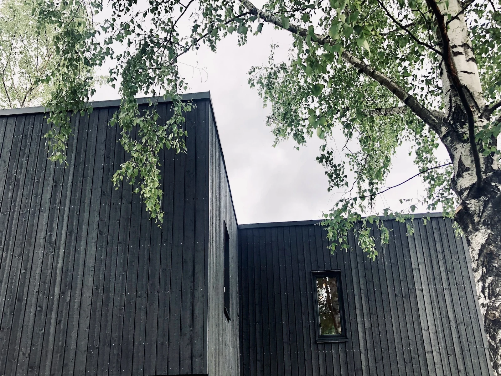
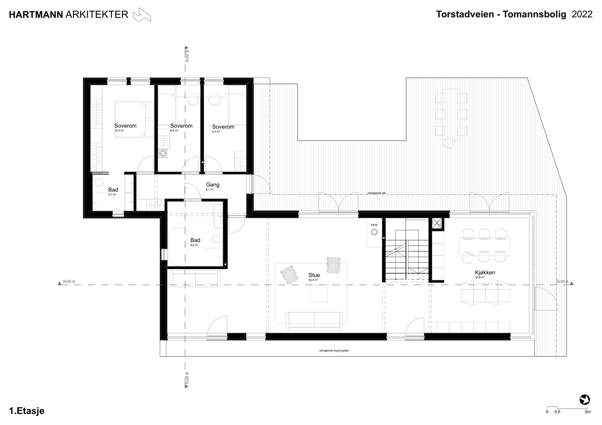
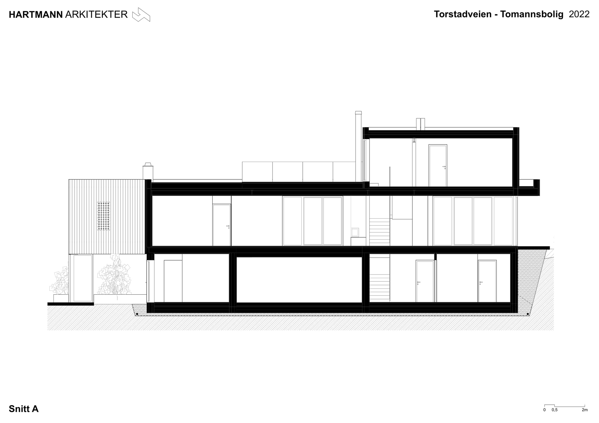
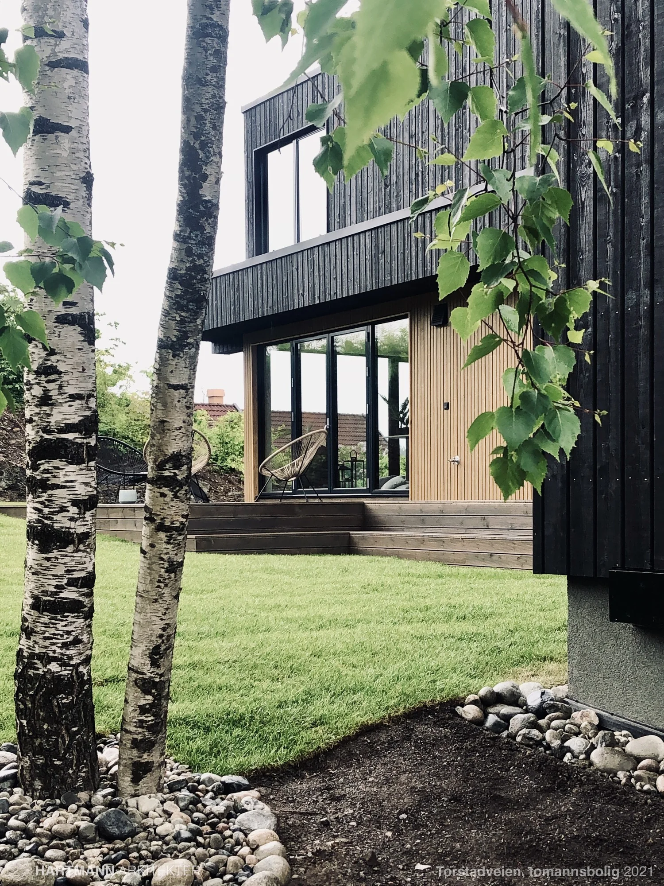
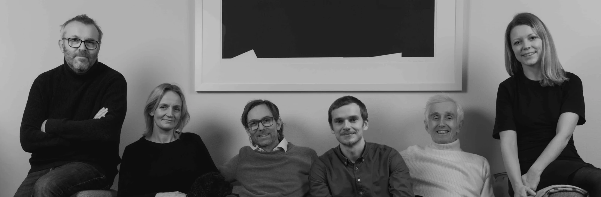

Gode steder.
For hele livet.
Fra rommet du våkner i, til nabolaget du hører til. Vi tegner arkitektur med mennesker i sentrum.
Se prosjektene våreArkitektur begynner
med å lytte.
En tomt har sine kvaliteter. Et bygg har sin historie. Og du har en idé om hva det kan bli. Vi knytter dem sammen.
Bli kjent med kontoretEt hjem begynner
med en tanke.
En tegning gjør tanken konkret. Rom, bevegelse og dagslys får en plass — før huset tar form.
To hjem.
Én gjennomtenkt helhet.
På Torstad møter en mindre bolig med egen hage en hovedbolig over tre nivåer. Hjørnevinduer og en inntrukket toppetasje åpner huset mot omgivelsene.
Den mindre boligen ligger nederst. Hovedboligen har kjøkken, stue og soverom på neste nivå.
Snittet viser nivåene i huset og sammenhengen mellom rom, terreng og takterrasse.

Åpne tegningen- Prosjekt
- Tomannsbolig med takterrasse
- Sted
- Torstad, Asker
- Dokument
- Planløsning
- Arkitekt
- Hartmann

Åpne tegningen- Prosjekt
- Tomannsbolig med takterrasse
- Sted
- Torstad, Asker
- Dokument
- Snitt
- Arkitekt
- Hartmann

Originalmateriale fra prosjektarkivet. Tegningene er ikke målestokkriktige på skjerm.
Stedet setter tonen.
 Høn Gård, Asker · Prosjektillustrasjon
Høn Gård, Asker · ProsjektillustrasjonHistorien blir.
Livet går videre.
Hva kan en gammel låve bli? Vi utforsker nye boliger i eksisterende bygg, med respekt for karakteren og rom for nye behov.
Nye muligheter i gamle låverSeks fagfolk.
Mange perspektiver.
Én felles tanke.
Det er menneskene som skal bruke rommene som gir arkitekturen retning.
Møt menneskene
Et snitt gjennom
sommerlivet.
På Medø er hytta formet rundt svaberget og livet ute. Store skyvedører åpner kjøkken og oppholdsrom mot terrassen og pergolaen.
Utforsk hytta på Tjøme

- Prosjekt
- Hytte med pergola
- Sted
- Tjøme
- Dokument
- Snitt gjennom pergola og terrasse
- Arkitekt
- Hartmann
Inne og uteSkyvedørene lar terrassen bli en del av oppholdsrommet.
MaterialerKryssfiner, betong og innebygde møbler gir interiøret sammenheng.
Fra det første
«tenk om»
til en tydelig retning.
De gode spørsmålene kommer tidlig. Tegningene utvikles i samtalen mellom deg, oss og de andre fagene.
Slik arbeider vi- 01
Forstå stedet
Behov, tomt og muligheter danner utgangspunktet. Hva skal bygges, hvem skal bruke det, og hvilke kvaliteter finnes allerede?
- 02
Utforske løsninger
Skisser og romlige modeller gjør ideene konkrete. Planløsning, lys og sammenheng med omgivelsene kan diskuteres tidlig.
- 03
Samle fagene
Arkitektur, interiør og tekniske fag må henge sammen. Tegninger og modeller er et felles arbeidsgrunnlag.
- 04
Gjøre det byggbart
Byggesøknad og videre detaljering fører arbeidet videre. Oppgaver og leveranser tilpasses omfanget av prosjektet.
Vi tegner også
mellom husene.
Adkomsten, tunet og de grønne rommene er en del av arkitekturen. På Høn undersøkes en låveform med tolv leiligheter, felles garasjekjeller og utearealer med frukttrær og lekeplass.
En reguleringsplan knytter bygget til en større sammenheng. Områdets karakter, bruk og muligheter er utgangspunktet.
Se planarbeidet på Høn
- Prosjekt
- Regulering for låve med leiligheter
- Sted
- Folabruveien, Høn
- Dokument
- Reguleringsplan
- Arkitekt
- Hartmann
Publisert prosjektfase: prosjektering, med godkjent rammetillatelse i 2024.